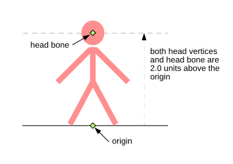
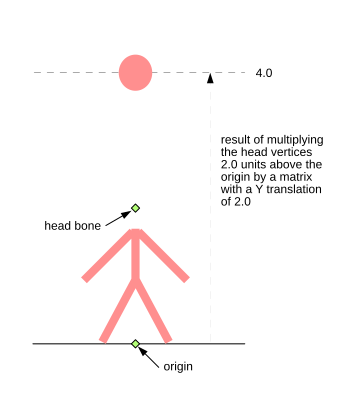
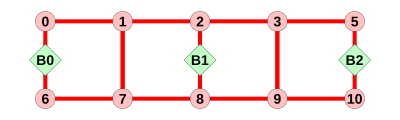
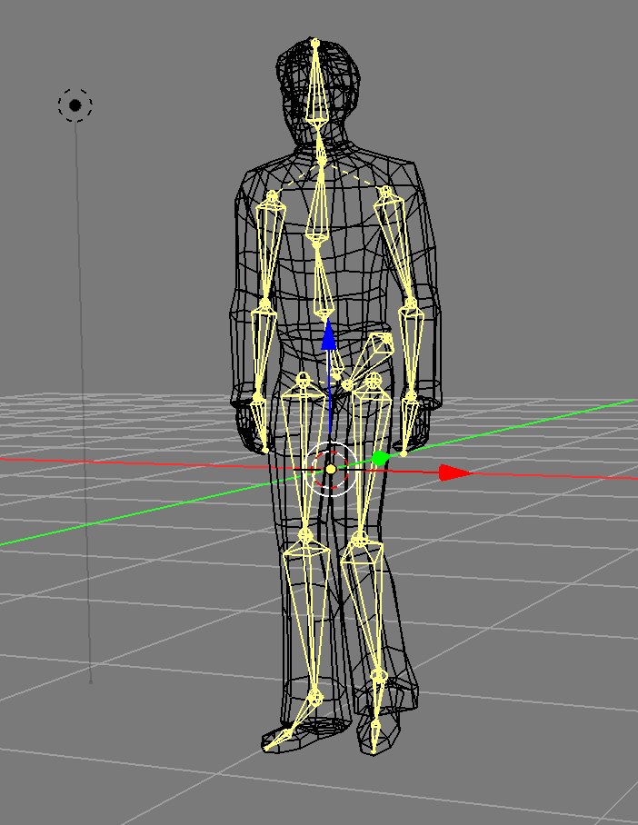
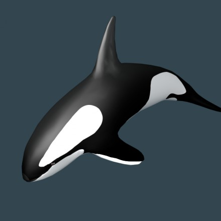
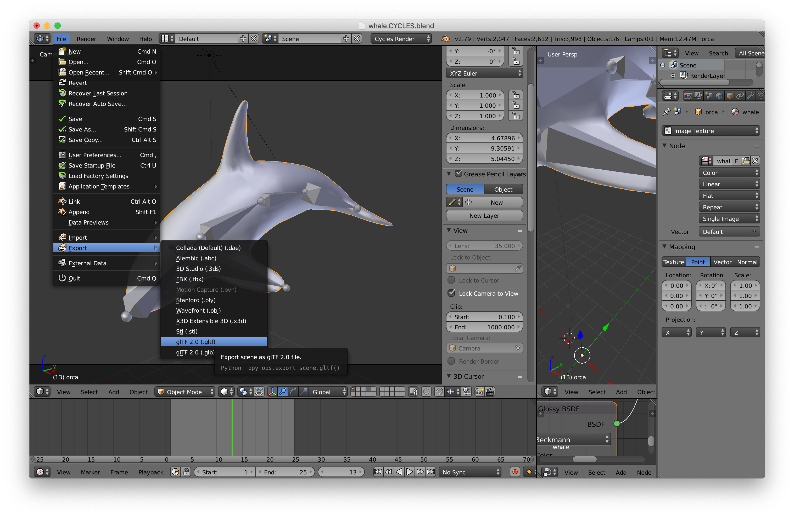
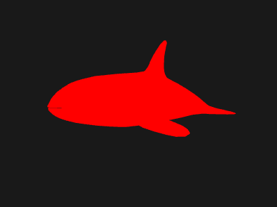
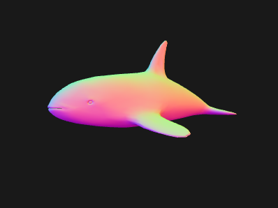
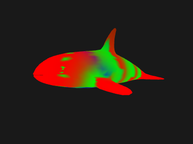
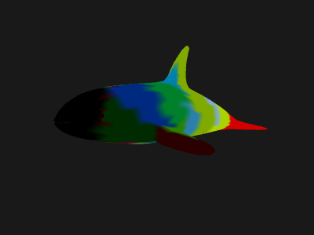

Le skinning en infographie est le nom donné au déplacement d’un ensemble de sommets basé sur l’influence pondérée de plusieurs matrices. C’est assez abstrait.
On appelle ça skinning (habillage) parce que c’est typiquement utilisé pour donner aux personnages 3D un “squelette” fait d’“os” où “os” est un autre terme pour matrice, et ensuite par sommet, on définit l’influence de chaque os sur ce sommet.
Par exemple, l’os de la main aurait une influence de presque 100% sur les sommets proches de la main d’un personnage, alors que l’os du pied aurait zéro influence sur ces mêmes sommets. Les sommets autour du poignet auraient une certaine influence de l’os de la main ainsi qu’une influence de l’os du bras.
La partie fondamentale est que vous avez besoin d’os (qui n’est qu’une façon de dire une hiérarchie de matrices) et de poids. Les poids sont des valeurs par sommet qui vont de 0 à 1 pour indiquer dans quelle mesure une matrice-os particulière affecte la position de ce sommet. Les poids sont un peu comme les couleurs de vertex en termes de données. Un ensemble de poids par sommet. En d’autres termes, les poids sont placés dans un tampon et fournis via des attributs.
En général, on limite le nombre de poids par sommet en partie parce que sinon ce serait beaucoup trop de données. Un personnage peut avoir entre 15 os (Virtua Fighter 1) et 150-300 os (certains jeux modernes). Si vous aviez 300 os, vous auriez besoin de 300 poids PAR sommet PAR os. Si votre personnage avait 10 000 sommets, cela représenterait 3 millions de poids nécessaires.
Ainsi, la plupart des systèmes de skinning temps réel limitent à environ 4 poids par sommet. Cela est généralement accompli dans un exporteur/convertisseur qui prend des données d’un logiciel 3D comme Blender/Maya/3DSMax et, pour chaque sommet, trouve les 4 os avec les poids les plus élevés puis normalise ces poids.
Pour donner un exemple pseudo-code, un sommet non skinné est typiquement calculé comme ceci :
gl_Position = projection * view * model * position;
Un sommet skinné est effectivement calculé comme ceci :
gl_Position = projection * view *
(bone1Matrix * position * weight1 +
bone2Matrix * position * weight2 +
bone3Matrix * position * weight3 +
bone4Matrix * position * weight4);
Comme vous pouvez le voir, c’est comme si on calculait 4 positions différentes pour chaque sommet puis qu’on les fondait en une seule en appliquant les poids.
En supposant que vous stockiez les matrices des os dans un tableau d’uniforms, et que vous passiez les poids et l’indice de l’os auquel chaque poids s’applique comme attributs, vous pourriez faire quelque chose comme :
#version 300 es
in vec4 a_position;
in vec4 a_weights; // 4 poids par sommet
in uvec4 a_boneNdx; // 4 indices d'os par sommet
uniform mat4 bones[MAX_BONES]; // 1 matrice par os
gl_Position = projection * view *
(a_bones[a_boneNdx[0]] * a_position * a_weight[0] +
a_bones[a_boneNdx[1]] * a_position * a_weight[1] +
a_bones[a_boneNdx[2]] * a_position * a_weight[2] +
a_boneS[a_boneNdx[3]] * a_position * a_weight[3]);
Il y a encore un problème. Supposez que vous ayez un modèle d’une personne avec l’origine (0,0,0) au sol juste entre leurs pieds.
Imaginons maintenant que vous placez une matrice/os/joint à leur tête et que vous voulez utiliser cet os pour le skinning. Pour simplifier, imaginons que vous définissiez simplement les poids de sorte que les sommets de la tête aient un poids de 1.0 pour l’os de la tête et qu’aucun autre joint n’influence ces sommets.

Il y a un problème. Les sommets de la tête sont à 2 unités au-dessus de l’origine. L’os de la tête est aussi à 2 unités au-dessus de l’origine. Si vous multipliiez réellement ces sommets de la tête par la matrice de l’os de la tête, vous obtiendriez des sommets à 4 unités au-dessus de l’origine. Les 2 unités d’origine des sommets + les 2 unités de la matrice de l’os de la tête.

Une solution est de stocker une “bind pose” qui est une matrice supplémentaire par joint de l’emplacement de chaque matrice avant qu’elle soit utilisée pour influencer les sommets. Dans ce cas, la bind pose de la matrice de la tête serait à 2 unités au-dessus de l’origine. Vous pouvez maintenant utiliser l’inverse de cette matrice pour soustraire les 2 unités supplémentaires.
En d’autres termes, les matrices d’os passées au shader ont chacune été multipliées par leur inverse bind pose afin que leur influence soit uniquement leur changement par rapport à leurs positions originales relativement à l’origine du mesh.
Faisons un petit exemple. Nous allons animer en 2D une grille comme celle-ci :

b0, b1 et b2 sont les matrices d’os.b1 est un enfant de b0 et b2 est un enfant de b10,1 auront un poids de 1.0 de l’os b02,3 auront un poids de 0.5 des os b0 et b14,5 auront un poids de 1.0 de l’os b16,7 auront un poids de 0.5 des os b1 et b28,9 auront un poids de 1.0 de l’os b2Nous utiliserons les utilitaires décrits dans moins de code, plus de fun.
D’abord nous avons besoin des sommets et pour chaque sommet l’index de chaque os qui l’influence et un nombre de 0 à 1 indiquant l’influence de cet os.
const arrays = {
position: {
numComponents: 2,
data: [
0, 1, // 0
0, -1, // 1
2, 1, // 2
2, -1, // 3
4, 1, // 4
4, -1, // 5
6, 1, // 6
6, -1, // 7
8, 1, // 8
8, -1, // 9
],
},
boneNdx: {
numComponents: 4,
data: new Uint8Array([
0, 0, 0, 0, // 0
0, 0, 0, 0, // 1
0, 1, 0, 0, // 2
0, 1, 0, 0, // 3
1, 0, 0, 0, // 4
1, 0, 0, 0, // 5
1, 2, 0, 0, // 6
1, 2, 0, 0, // 7
2, 0, 0, 0, // 8
2, 0, 0, 0, // 9
]),
},
weight: {
numComponents: 4,
data: [
1, 0, 0, 0, // 0
1, 0, 0, 0, // 1
.5,.5, 0, 0, // 2
.5,.5, 0, 0, // 3
1, 0, 0, 0, // 4
1, 0, 0, 0, // 5
.5,.5, 0, 0, // 6
.5,.5, 0, 0, // 7
1, 0, 0, 0, // 8
1, 0, 0, 0, // 9
],
},
indices: {
numComponents: 2,
data: [
0, 1,
0, 2,
1, 3,
2, 3, //
2, 4,
3, 5,
4, 5,
4, 6,
5, 7, //
6, 7,
6, 8,
7, 9,
8, 9,
],
},
};
// appelle gl.createBuffer, gl.bindBuffer, gl.bufferData
const bufferInfo = twgl.createBufferInfoFromArrays(gl, arrays);
const skinVAO = twgl.createVAOFromBufferInfo(gl, programInfo, bufferInfo);
Nous pouvons définir nos valeurs d’uniform en incluant une matrice pour chaque os :
// 4 matrices, une pour chaque os
const numBones = 4;
const boneArray = new Float32Array(numBones * 16);
var uniforms = {
projection: m4.orthographic(-20, 20, -10, 10, -1, 1),
view: m4.translation(-6, 0, 0),
bones: boneArray,
color: [1, 0, 0, 1],
};
Nous pouvons créer des vues dans le boneArray, une pour chaque matrice :
// crée des vues pour chaque os. Cela permet à tous les os
// d'exister dans 1 tableau pour l'upload mais comme des tableaux
// séparés pour utilisation avec les fonctions mathématiques
const boneMatrices = []; // les données uniformes
const bones = []; // la valeur avant multiplication par la matrice inverse de bind
const bindPose = []; // la matrice de bind
for (let i = 0; i < numBones; ++i) {
boneMatrices.push(new Float32Array(boneArray.buffer, i * 4 * 16, 16));
bindPose.push(m4.identity()); // alloue juste du stockage
bones.push(m4.identity()); // alloue juste du stockage
}
Puis du code pour manipuler les matrices d’os. Nous les ferons juste tourner dans une hiérarchie comme les os d’un doigt.
// fait tourner chaque os selon l'angle et simule une hiérarchie
function computeBoneMatrices(bones, angle) {
const m = m4.identity();
m4.zRotate(m, angle, bones[0]);
m4.translate(bones[0], 4, 0, 0, m);
m4.zRotate(m, angle, bones[1]);
m4.translate(bones[1], 4, 0, 0, m);
m4.zRotate(m, angle, bones[2]);
// bones[3] n'est pas utilisé
}
Maintenant, appelons-la une fois pour générer leurs positions initiales et utilisons le résultat pour calculer les matrices inverses de bind pose.
// calcule les positions initiales de chaque matrice
computeBoneMatrices(bindPose, 0);
// calcule leurs inverses
const bindPoseInv = bindPose.map(function(m) {
return m4.inverse(m);
});
Nous sommes maintenant prêts à faire le rendu.
D’abord, nous animons les os en calculant une nouvelle matrice monde pour chacun :
const t = time * 0.001;
const angle = Math.sin(t) * 0.8;
computeBoneMatrices(bones, angle);
Ensuite, nous multiplions le résultat de chacun par l’inverse de la bind pose pour résoudre le problème mentionné ci-dessus :
// multiplie chaque os par son inverse de bindPose
bones.forEach((bone, ndx) => {
m4.multiply(bone, bindPoseInv[ndx], boneMatrices[ndx]);
});
Puis toute la procédure habituelle : configurer les attributs, définir les uniforms et dessiner.
gl.useProgram(programInfo.program);
gl.bindVertexArray(skinVAO);
// appelle gl.uniformXXX, gl.activeTexture, gl.bindTexture
twgl.setUniforms(programInfo, uniforms);
// appelle gl.drawArrays ou gl.drawIndices
twgl.drawBufferInfo(gl, bufferInfo, gl.LINES);
Et voici le résultat :
Les lignes rouges sont le mesh skinné. Les lignes verte et bleue représentent l’axe X et l’axe Y de chaque os ou “joint”. On peut voir comment les sommets influencés par plusieurs os se déplacent entre les os qui les influencent. Nous n’avons pas couvert comment les os sont dessinés car ce n’est pas important pour expliquer comment fonctionne le skinning. Consultez le code si vous êtes curieux.
NOTE : la confusion entre os et joints. Il n’y a qu’une seule chose, les matrices. Mais dans un logiciel de modélisation 3D, on dessine généralement un gizmo (un widget d’interface) entre chaque matrice. Cela finit par ressembler à un os. Les joints sont là où se trouvent les matrices et on trace une ligne ou un cône de chaque joint au suivant pour que ça ressemble un peu à un squelette.

Une chose à noter que nous n’avions peut-être pas faite avant : nous avons créé un attribut
uvec4 qui est un attribut qui reçoit des entiers non signés. Si nous n’utilisions pas twgl,
nous devrions appeler gl.vertexAttribIPointer pour le configurer au lieu du plus courant
gl.vertexAttribPointer.
Malheureusement, il y a une limite au nombre d’uniforms que vous pouvez utiliser dans un shader.
La limite basse dans WebGL est de 64 vec4 ce qui n’est que 8 mat4, et vous avez probablement
besoin de certains de ces uniforms pour d’autres choses, par exemple nous avons color
dans le fragment shader et nous avons projection et view, ce qui signifie que si
nous étions sur un appareil avec une limite de 64 vec4, nous ne pourrions avoir que 5 os ! En
consultant WebGLStats,
la plupart des appareils supportent 128 vec4 et 70% d’entre eux supportent 256 vec4, mais avec
notre exemple ci-dessus c’est encore seulement 13 os et 29 os respectivement. 13 n’est même pas
suffisant pour un personnage style Virtua Fighter 1 du début des années 90, et 29 est loin du
nombre utilisé dans la plupart des jeux modernes.
Quelques façons de contourner ça. L’une est de pré-traiter les modèles hors ligne et de les découper en plusieurs parties, chacune n’utilisant pas plus de N os. C’est assez complexe et apporte son propre lot de problèmes.
Une autre consiste à stocker les matrices d’os dans une texture. C’est un rappel important que les textures ne sont pas que des images, elles sont effectivement des tableaux 2D de données à accès aléatoire que vous pouvez passer à un shader et utiliser pour toutes sortes de choses qui ne sont pas juste lire des images pour le texturage.
Passons nos matrices dans une texture pour contourner la limite des uniforms. Pour simplifier les choses, nous allons utiliser des textures à virgule flottante.
Mettons à jour le shader pour extraire les matrices d’une texture. Nous ferons la texture avec une matrice par ligne. Chaque texel de la texture a R, G, B et A, soit 4 valeurs, donc nous n’avons besoin que de 4 pixels par matrice, un pixel pour chaque ligne de la matrice. Les textures peuvent généralement avoir au moins 2048 pixels dans certaines dimensions, donc cela nous donnera de l’espace pour au moins 2048 matrices d’os, ce qui est amplement suffisant.
#version 300 es
in vec4 a_position;
in vec4 a_weight;
in uvec4 a_boneNdx;
uniform mat4 projection;
uniform mat4 view;
*uniform sampler2D boneMatrixTexture;
+mat4 getBoneMatrix(uint boneNdx) {
+ return mat4(
+ texelFetch(boneMatrixTexture, ivec2(0, boneNdx), 0),
+ texelFetch(boneMatrixTexture, ivec2(1, boneNdx), 0),
+ texelFetch(boneMatrixTexture, ivec2(2, boneNdx), 0),
+ texelFetch(boneMatrixTexture, ivec2(3, boneNdx), 0));
+}
void main() {
gl_Position = projection * view *
* (getBoneMatrix(a_boneNdx[0]) * a_position * a_weight[0] +
* getBoneMatrix(a_boneNdx[1]) * a_position * a_weight[1] +
* getBoneMatrix(a_boneNdx[2]) * a_position * a_weight[2] +
* getBoneMatrix(a_boneNdx[3]) * a_position * a_weight[3]);
}
Remarquez que nous utilisons texelFetch au lieu de texture pour obtenir des données
de la texture. texelFetch récupère un seul texel de la texture.
Il prend en entrée un sampler, un ivec2 avec les coordonnées x,y de la texture
en texels, et le niveau de mip comme ceci :
vec4 data = texelFetch(sampler2D, ivec2(x, y), lod);
Maintenant, configurons une texture dans laquelle nous pouvons placer les matrices d’os :
// prépare la texture pour les matrices d'os
const boneMatrixTexture = gl.createTexture();
gl.bindTexture(gl.TEXTURE_2D, boneMatrixTexture);
// puisque nous voulons utiliser la texture pour des données pures, on désactive
// le filtrage
gl.texParameteri(gl.TEXTURE_2D, gl.TEXTURE_MIN_FILTER, gl.NEAREST);
gl.texParameteri(gl.TEXTURE_2D, gl.TEXTURE_MAG_FILTER, gl.NEAREST);
Et nous la passons comme uniform.
const uniforms = {
projection: m4.orthographic(-20, 20, -10, 10, -1, 1),
view: m4.translation(-6, 0, 0),
* boneMatrixTexture,
color: [1, 0, 0, 1],
};
La seule chose que nous devons changer est de mettre à jour la texture avec les dernières matrices d’os lors du rendu :
// met à jour la texture avec les matrices courantes
gl.bindTexture(gl.TEXTURE_2D, boneMatrixTexture);
gl.texImage2D(
gl.TEXTURE_2D,
0, // niveau
gl.RGBA32F, // format interne
4, // largeur 4 pixels, chaque pixel a RGBA donc 4 pixels = 16 valeurs
numBones, // une ligne par os
0, // bordure
gl.RGBA, // format
gl.FLOAT, // type
boneArray);
Le résultat est le même mais nous avons résolu le problème du manque d’uniforms pour passer les matrices.
Voilà donc les bases du skinning. Ce n’est pas si difficile d’écrire le code pour afficher un mesh skinné. La partie la plus difficile est d’obtenir les données. Vous avez généralement besoin d’un logiciel 3D comme Blender/Maya/3D Studio Max, puis soit d’écrire votre propre exporteur, soit de trouver un exporteur et un format qui fournira toutes les données nécessaires. Vous verrez, en parcourant le code, qu’il y a 10 fois plus de code dans le chargement d’un skin que dans son affichage, et cela n’inclut pas les probablement 20 à 30 fois plus de code dans l’exporteur pour extraire les données du logiciel de modélisation 3D. À titre d’aparté, c’est l’une des choses que les gens qui écrivent leur propre moteur 3D manquent souvent. Le moteur est la partie facile 😜
Il va y avoir beaucoup de code donc essayons d’abord de simplement afficher le modèle non skinné.
Essayons de charger un fichier glTF. glTF est conçu pour WebGL. En cherchant sur le net, j’ai trouvé ce fichier blender d’orque par Junskie Pastilan.

Il existe 2 formats de haut niveau pour glTF. Le format .gltf est un fichier JSON qui
référence généralement un fichier .bin contenant habituellement la géométrie et
éventuellement les données d’animation. L’autre format est .glb qui est un format binaire.
C’est essentiellement le JSON et tous les autres fichiers concaténés en un seul fichier
binaire avec un court en-tête et une section taille/type entre chaque pièce concaténée.
Pour JavaScript, je pense que le format .gltf est légèrement plus facile pour commencer,
alors essayons de charger ça.
D’abord j’ai téléchargé le fichier .blend, installé Blender, installé l’exporteur gltf, chargé le fichier dans Blender et exporté.

Une note rapide : les logiciels 3D comme Blender, Maya, 3DSMax sont des logiciels extrêmement complexes avec des milliers d’options. Quand j’ai appris 3DSMax en 1996, j’ai passé 2-3 heures par jour à lire le manuel de plus de 1000 pages et à travailler les tutoriels pendant environ 3 semaines. J’ai fait quelque chose de similaire quand j’ai appris Maya quelques années plus tard. Blender est tout aussi complexe et de plus il a une interface très différente de pratiquement tous les autres logiciels. C’est juste une façon de dire que vous devriez vous attendre à passer un temps significatif à apprendre quel que soit le logiciel 3D que vous décidez d’utiliser.
Après l’exportation, j’ai chargé le fichier .gltf dans mon éditeur de texte et j’ai jeté un coup d’œil. J’ai utilisé cette feuille de référence pour comprendre le format.
Je veux préciser que le code ci-dessous n’est pas un chargeur glTF parfait. C’est juste suffisant pour afficher l’orque. Je suspecte que si on essayait différents fichiers, on rencontrerait des domaines qui nécessiteraient des modifications.
La première chose à faire est de charger le fichier. Pour simplifier, utilisons le
async/await de JavaScript. D’abord, écrivons du code
pour charger le fichier .gltf et tous les fichiers qu’il référence.
async function loadGLTF(url) {
const gltf = await loadJSON(url);
// charge tous les fichiers référencés relativement au fichier gltf
const baseURL = new URL(url, location.href);
gltf.buffers = await Promise.all(gltf.buffers.map((buffer) => {
const url = new URL(buffer.uri, baseURL.href);
return loadBinary(url.href);
}));
...
async function loadFile(url, typeFunc) {
const response = await fetch(url);
if (!response.ok) {
throw new Error(`could not load: ${url}`);
}
return await response[typeFunc]();
}
async function loadBinary(url) {
return loadFile(url, 'arrayBuffer');
}
async function loadJSON(url) {
return loadFile(url, 'json');
}
Maintenant nous devons parcourir les données et les connecter.
D’abord, gérons ce que glTF considère comme un mesh. Un mesh est une collection de primitives.
Une primitive est effectivement les tampons et attributs nécessaires pour rendre quelque chose.
Utilisons la bibliothèque twgl couverte dans moins de code, plus de fun.
Nous parcourrons les meshes et pour chacun construirons un BufferInfo que nous pourrons
passer à twgl.createVAOFromBufferInfo. Rappelons qu’un BufferInfo est effectivement
les informations d’attributs, les indices s’il y en a, et le nombre d’éléments à passer
à gl.drawXXX. Par exemple un cube avec juste des positions et des normales pourrait avoir
un BufferInfo avec cette structure :
const cubeBufferInfo = {
attribs: {
'a_POSITION': { buffer: WebGLBuffer, type: gl.FLOAT, numComponents: 3, },
'a_NORMAL': { buffer: WebGLBuffer, type: gl.FLOAT, numComponents: 3, },
},
numElements: 24,
indices: WebGLBuffer,
elementType: gl.UNSIGNED_SHORT,
}
Donc nous parcourrons chaque primitive et générerons un BufferInfo comme ça.
Les primitives ont un tableau d’attributs, chaque attribut référence un accesseur.
Un accesseur indique quel type de données est là, par exemple VEC3/gl.FLOAT et
référence une bufferView. Une bufferView spécifie une vue dans un buffer. Étant donné
un index d’accesseur, nous pouvons écrire du code qui retourne un WebGLBuffer avec les
données chargées, l’accesseur et le stride spécifié pour la bufferView.
// Étant donné un index d'accesseur, retourne un accesseur, WebGLBuffer et un stride
function getAccessorAndWebGLBuffer(gl, gltf, accessorIndex) {
const accessor = gltf.accessors[accessorIndex];
const bufferView = gltf.bufferViews[accessor.bufferView];
if (!bufferView.webglBuffer) {
const buffer = gl.createBuffer();
const target = bufferView.target || gl.ARRAY_BUFFER;
const arrayBuffer = gltf.buffers[bufferView.buffer];
const data = new Uint8Array(arrayBuffer, bufferView.byteOffset, bufferView.byteLength);
gl.bindBuffer(target, buffer);
gl.bufferData(target, data, gl.STATIC_DRAW);
bufferView.webglBuffer = buffer;
}
return {
accessor,
buffer: bufferView.webglBuffer,
stride: bufferView.stride || 0,
};
}
Nous avons aussi besoin d’un moyen de convertir un type d’accesseur glTF en nombre de composants :
function throwNoKey(key) {
throw new Error(`no key: ${key}`);
}
const accessorTypeToNumComponentsMap = {
'SCALAR': 1,
'VEC2': 2,
'VEC3': 3,
'VEC4': 4,
'MAT2': 4,
'MAT3': 9,
'MAT4': 16,
};
function accessorTypeToNumComponents(type) {
return accessorTypeToNumComponentsMap[type] || throwNoKey(type);
}
Maintenant que nous avons créé ces fonctions, nous pouvons les utiliser pour configurer nos meshes.
Note : les fichiers glTF peuvent supposément définir des matériaux mais l’exporteur n’a mis aucun matériau dans le fichier même si l’export des matériaux était coché. Je suppose que l’exporteur ne gère pas tous les types de matériaux dans Blender, ce qui est malheureux. Nous utiliserons un matériau par défaut s’il n’y en a pas dans le fichier. Puisqu’il n’y a pas de matériaux dans ce fichier, il n’y a pas de code ici pour utiliser les matériaux glTF.
const defaultMaterial = {
uniforms: {
u_diffuse: [.5, .8, 1, 1],
},
};
// configure les meshes
gltf.meshes.forEach((mesh) => {
mesh.primitives.forEach((primitive) => {
const attribs = {};
let numElements;
for (const [attribName, index] of Object.entries(primitive.attributes)) {
const {accessor, buffer, stride} = getAccessorAndWebGLBuffer(gl, gltf, index);
numElements = accessor.count;
attribs[`a_${attribName}`] = {
buffer,
type: accessor.componentType,
numComponents: accessorTypeToNumComponents(accessor.type),
stride,
offset: accessor.byteOffset | 0,
};
}
const bufferInfo = {
attribs,
numElements,
};
if (primitive.indices !== undefined) {
const {accessor, buffer} = getAccessorAndWebGLBuffer(gl, gltf, primitive.indices);
bufferInfo.numElements = accessor.count;
bufferInfo.indices = buffer;
bufferInfo.elementType = accessor.componentType;
}
primitive.bufferInfo = bufferInfo;
// crée un VAO pour cette primitive
primitive.vao = twgl.createVAOFromBufferInfo(gl, meshProgramInfo, primitive.bufferInfo);
// sauvegarde les infos de matériau pour cette primitive
primitive.material = gltf.materials && gltf.materials[primitive.material] || defaultMaterial;
});
});
Maintenant chaque primitive aura une propriété bufferInfo et material.
Pour le skinning, nous avons presque toujours besoin d’un graphe de scène. Nous avons créé un graphe de scène dans l’article sur les graphes de scène, alors utilisons-le.
class TRS {
constructor(position = [0, 0, 0], rotation = [0, 0, 0, 1], scale = [1, 1, 1]) {
this.position = position;
this.rotation = rotation;
this.scale = scale;
}
getMatrix(dst) {
dst = dst || new Float32Array(16);
m4.compose(this.position, this.rotation, this.scale, dst);
return dst;
}
}
class Node {
constructor(source, name) {
this.name = name;
this.source = source;
this.parent = null;
this.children = [];
this.localMatrix = m4.identity();
this.worldMatrix = m4.identity();
this.drawables = [];
}
setParent(parent) {
if (this.parent) {
this.parent._removeChild(this);
this.parent = null;
}
if (parent) {
parent._addChild(this);
this.parent = parent;
}
}
updateWorldMatrix(parentWorldMatrix) {
const source = this.source;
if (source) {
source.getMatrix(this.localMatrix);
}
if (parentWorldMatrix) {
// une matrice a été passée, donc on fait le calcul
m4.multiply(parentWorldMatrix, this.localMatrix, this.worldMatrix);
} else {
// aucune matrice passée, on copie juste local vers world
m4.copy(this.localMatrix, this.worldMatrix);
}
// traite maintenant tous les enfants
const worldMatrix = this.worldMatrix;
for (const child of this.children) {
child.updateWorldMatrix(worldMatrix);
}
}
traverse(fn) {
fn(this);
for (const child of this.children) {
child.traverse(fn);
}
}
_addChild(child) {
this.children.push(child);
}
_removeChild(child) {
const ndx = this.children.indexOf(child);
this.children.splice(ndx, 1);
}
}
Il y a quelques changements notables par rapport au code de l’article sur les graphes de scène.
Ce code utilise la fonctionnalité class d’ES6.
C’est bien plus agréable d’utiliser la syntaxe class que l’ancienne façon de définir une classe.
Nous avons ajouté un tableau de drawables à Node.
Cela listera les choses à dessiner depuis ce Node. Nous placerons dans cette liste des instances d’une classe responsable du dessin effectif. Ainsi nous pouvons dessiner génériquement différentes choses en utilisant différentes classes.
Note : Je ne suis pas sûr que mettre un tableau de drawables sur Node soit la meilleure décision. J’ai l’impression que le graphe de scène lui-même ne devrait peut-être pas contenir de drawables. Les choses qui doivent être dessinées pourraient plutôt juste référencer le nœud dans le graphe d’où obtenir leurs données. Cette façon avec les drawables dans le graphe est courante, donc commençons par ça.
Nous avons ajouté une méthode traverse.
Elle appelle une fonction en lui passant le nœud courant puis fait récursivement la même chose pour tous les nœuds enfants.
La classe TRS utilise un quaternion pour la rotation.
Nous n’avons pas couvert les quaternions et pour être honnête, je ne pense pas les comprendre suffisamment pour les expliquer. Heureusement, nous n’avons pas besoin de savoir comment ils fonctionnent pour les utiliser. Nous prenons juste les données du fichier gltf et appelons une fonction qui construit une matrice à partir de ces données et nous utilisons la matrice.
Les nœuds dans le fichier glTF sont stockés sous forme de tableau plat.
Nous convertirons les données de nœud dans le glTF en instances de Node. Nous sauvegardons
l’ancien tableau de données de nœud comme origNodes car nous en aurons besoin plus tard.
const origNodes = gltf.nodes;
gltf.nodes = gltf.nodes.map((n) => {
const {name, skin, mesh, translation, rotation, scale} = n;
const trs = new TRS(translation, rotation, scale);
const node = new Node(trs, name);
const realMesh = gltf.meshes[mesh];
if (realMesh) {
node.drawables.push(new MeshRenderer(realMesh));
}
return node;
});
Ci-dessus, nous avons créé une instance TRS pour chaque nœud, une instance Node pour chaque
nœud, et si il y avait une propriété mesh, nous avons cherché les données du mesh configurées
précédemment et créé un MeshRenderer pour le dessiner.
Créons le MeshRenderer. C’est juste une encapsulation du code utilisé dans moins de code, plus de fun pour rendre un seul modèle. Il ne fait que tenir une référence
à un mesh et pour chaque primitive configure le programme, les attributs et les uniforms et appelle
finalement gl.drawArrays ou gl.drawElements via twgl.drawBufferInfo.
class MeshRenderer {
constructor(mesh) {
this.mesh = mesh;
}
render(node, projection, view, sharedUniforms) {
const {mesh} = this;
gl.useProgram(meshProgramInfo.program);
for (const primitive of mesh.primitives) {
gl.bindVertexArray(primitive.vao);
twgl.setUniforms(meshProgramInfo, {
u_projection: projection,
u_view: view,
u_world: node.worldMatrix,
}, primitive.material.uniforms, sharedUniforms);
twgl.drawBufferInfo(gl, primitive.bufferInfo);
}
}
}
Nous avons créé les nœuds, maintenant nous devons les arranger en graphe de scène. Cela se fait à 2 niveaux dans glTF. D’abord, chaque nœud a un tableau optionnel d’enfants qui sont aussi des indices dans le tableau de nœuds, donc nous pouvons parcourir tous les nœuds et parentaliser leurs enfants :
function addChildren(nodes, node, childIndices) {
childIndices.forEach((childNdx) => {
const child = nodes[childNdx];
child.setParent(node);
});
}
// arrange les nœuds dans le graphe
gltf.nodes.forEach((node, ndx) => {
const children = origNodes[ndx].children;
if (children) {
addChildren(gltf.nodes, node, children);
}
});
Ensuite il y a un tableau de scènes. Une scène référence un tableau de nœuds par index dans le tableau de nœuds qui sont à la base de la scène. Je ne vois pas pourquoi ils n’ont pas simplement commencé avec un seul nœud racine, mais peu importe, c’est ce qui est dans le fichier glTF donc nous créons un nœud racine et parentalisons tous les enfants de la scène à ce nœud :
// configure les scènes
for (const scene of gltf.scenes) {
scene.root = new Node(new TRS(), scene.name);
addChildren(gltf.nodes, scene.root, scene.nodes);
}
return gltf;
}
et nous avons terminé le chargement, du moins juste pour les meshes. Marquons la fonction
principale comme async pour pouvoir utiliser le mot-clé await.
async function main() {
et nous pouvons charger le fichier gltf comme ceci :
const gltf = await loadGLTF('resources/models/killer_whale/whale.CYCLES.gltf');
Pour rendre, nous avons besoin d’un shader qui correspond aux données dans le fichier gltf. Regardons les données dans le fichier gltf pour la primitive qui s’y trouve :
{
"name" : "orca",
"primitives" : [
{
"attributes" : {
"JOINTS_0" : 5,
"NORMAL" : 2,
"POSITION" : 1,
"TANGENT" : 3,
"TEXCOORD_0" : 4,
"WEIGHTS_0" : 6
},
"indices" : 0
}
]
}
En regardant ça, pour le rendu utilisons juste NORMAL et POSITION. Nous avons ajouté a_
devant chaque attribut, donc un vertex shader comme celui-ci devrait fonctionner :
#version 300 es
in vec4 a_POSITION;
in vec3 a_NORMAL;
uniform mat4 u_projection;
uniform mat4 u_view;
uniform mat4 u_world;
out vec3 v_normal;
void main() {
gl_Position = u_projection * u_view * u_world * a_POSITION;
v_normal = mat3(u_world) * a_NORMAL;
}
et pour le fragment shader utilisons une lumière directionnelle simple :
#version 300 es
precision highp float;
int vec3 v_normal;
uniform vec4 u_diffuse;
uniform vec3 u_lightDirection;
out vec4 outColor;
void main () {
vec3 normal = normalize(v_normal);
float light = dot(u_lightDirection, normal) * .5 + .5;
outColor = vec4(u_diffuse.rgb * light, u_diffuse.a);
}
Remarquez que nous prenons le produit scalaire comme dans l’article sur les lumières directionnelles mais contrairement à cet article, ici le produit scalaire est multiplié par 0.5 et nous ajoutons 0.5. Avec un éclairage directionnel normal, la surface est éclairée à 100% quand elle fait directement face à la lumière et diminue à 0% quand la surface est perpendiculaire à la lumière. Cela signifie que l’ensemble de la moitié du modèle faisant face à l’opposé de la lumière est noir. En multipliant par 0.5 et en ajoutant 0.5, nous faisons passer le produit scalaire de -1 <-> 1 à 0 <-> 1, ce qui signifie qu’il ne sera noir que lorsqu’il fait face à la direction complètement opposée. Cela donne un éclairage bon marché mais agréable pour des tests simples.
Donc, nous devons compiler et lier les shaders.
// compile et lie les shaders, cherche les emplacements d'attribut et d'uniform
const meshProgramInfo = twgl.createProgramInfo(gl, [meshVS, fs]);
et ensuite pour le rendu, tout ce qui est différent d’avant est :
const sharedUniforms = {
u_lightDirection: m4.normalize([-1, 3, 5]),
};
function renderDrawables(node) {
for(const drawable of node.drawables) {
drawable.render(node, projection, view, sharedUniforms);
}
}
for (const scene of gltf.scenes) {
// met à jour toutes les matrices monde dans la scène.
scene.root.updateWorldMatrix();
// parcourt la scène et rend tous les renderables
scene.root.traverse(renderDrawables);
}
Ce qui reste d’avant (non montré ci-dessus) est notre code pour calculer une matrice de projection,
une matrice de caméra et une matrice de vue. Nous parcourons ensuite chaque scène, appelons
scene.root.updateWorldMatrix qui mettra à jour la matrice monde de tous les nœuds dans ce graphe.
Puis nous appelons scene.root.traverse avec renderDrawables.
renderDrawables appelle la méthode render de tous les drawables sur ce nœud en passant la
projection, la vue et les infos d’éclairage via sharedUniforms.
Maintenant que ça fonctionne, gérons les skins.
D’abord, créons une classe pour représenter un skin. Elle gérera la liste des joints, qui est un autre terme pour les nœuds du graphe de scène qui s’appliquent au skin. Elle aura aussi les matrices inverses de bind et gérera la texture dans laquelle nous mettrons les matrices de joints.
class Skin {
constructor(joints, inverseBindMatrixData) {
this.joints = joints;
this.inverseBindMatrices = [];
this.jointMatrices = [];
// alloue assez d'espace pour une matrice par joint
this.jointData = new Float32Array(joints.length * 16);
// crée des vues pour chaque joint et inverseBindMatrix
for (let i = 0; i < joints.length; ++i) {
this.inverseBindMatrices.push(new Float32Array(
inverseBindMatrixData.buffer,
inverseBindMatrixData.byteOffset + Float32Array.BYTES_PER_ELEMENT * 16 * i,
16));
this.jointMatrices.push(new Float32Array(
this.jointData.buffer,
Float32Array.BYTES_PER_ELEMENT * 16 * i,
16));
}
// crée une texture pour stocker les matrices de joints
this.jointTexture = gl.createTexture();
gl.bindTexture(gl.TEXTURE_2D, this.jointTexture);
gl.texParameteri(gl.TEXTURE_2D, gl.TEXTURE_MIN_FILTER, gl.NEAREST);
gl.texParameteri(gl.TEXTURE_2D, gl.TEXTURE_MAG_FILTER, gl.NEAREST);
gl.texParameteri(gl.TEXTURE_2D, gl.TEXTURE_WRAP_S, gl.CLAMP_TO_EDGE);
gl.texParameteri(gl.TEXTURE_2D, gl.TEXTURE_WRAP_T, gl.CLAMP_TO_EDGE);
}
update(node) {
const globalWorldInverse = m4.inverse(node.worldMatrix);
// parcourt chaque joint et obtient sa matrice monde courante,
// applique les matrices inverses de bind et stocke
// le résultat entier dans la texture
for (let j = 0; j < this.joints.length; ++j) {
const joint = this.joints[j];
const dst = this.jointMatrices[j];
m4.multiply(globalWorldInverse, joint.worldMatrix, dst);
m4.multiply(dst, this.inverseBindMatrices[j], dst);
}
gl.bindTexture(gl.TEXTURE_2D, this.jointTexture);
gl.texImage2D(gl.TEXTURE_2D, 0, gl.RGBA32F, 4, this.joints.length, 0,
gl.RGBA, gl.FLOAT, this.jointData);
}
}
Et comme nous avions un MeshRenderer, créons un SkinRenderer qui utilise le Skin
pour rendre un mesh skinné.
class SkinRenderer {
constructor(mesh, skin) {
this.mesh = mesh;
this.skin = skin;
}
render(node, projection, view, sharedUniforms) {
const {skin, mesh} = this;
skin.update(node);
gl.useProgram(skinProgramInfo.program);
for (const primitive of mesh.primitives) {
gl.bindVertexArray(primitive.vao);
twgl.setUniforms(skinProgramInfo, {
u_projection: projection,
u_view: view,
u_world: node.worldMatrix,
u_jointTexture: skin.jointTexture,
u_numJoints: skin.joints.length,
}, primitive.material.uniforms, sharedUniforms);
twgl.drawBufferInfo(gl, primitive.bufferInfo);
}
}
}
Vous pouvez voir que c’est très similaire au MeshRenderer. Il a une référence à un Skin
qu’il utilise pour mettre à jour toutes les matrices nécessaires au rendu. Puis il suit le
schéma standard pour le rendu : utilise le programme, configure les attributs, définit tous
les uniforms avec twgl.setUniforms qui lie aussi les textures, et effectue le rendu.
Nous avons aussi besoin d’un vertex shader qui supporte le skinning :
const skinVS = `#version 300 es
in vec4 a_POSITION;
in vec3 a_NORMAL;
in vec4 a_WEIGHTS_0;
in uvec4 a_JOINTS_0;
uniform mat4 u_projection;
uniform mat4 u_view;
uniform mat4 u_world;
uniform sampler2D u_jointTexture;
uniform float u_numJoints;
out vec3 v_normal;
mat4 getBoneMatrix(uint jointNdx) {
return mat4(
texelFetch(u_jointTexture, ivec2(0, jointNdx), 0),
texelFetch(u_jointTexture, ivec2(1, jointNdx), 0),
texelFetch(u_jointTexture, ivec2(2, jointNdx), 0),
texelFetch(u_jointTexture, ivec2(3, jointNdx), 0));
}
void main() {
mat4 skinMatrix = getBoneMatrix(a_JOINTS_0[0]) * a_WEIGHTS_0[0] +
getBoneMatrix(a_JOINTS_0[1]) * a_WEIGHTS_0[1] +
getBoneMatrix(a_JOINTS_0[2]) * a_WEIGHTS_0[2] +
getBoneMatrix(a_JOINTS_0[3]) * a_WEIGHTS_0[3];
mat4 world = u_world * skinMatrix;
gl_Position = u_projection * u_view * world * a_POSITION;
v_normal = mat3(world) * a_NORMAL;
}
`;
C’est essentiellement le même que notre shader de skinning ci-dessus. Nous avons renommé
les attributs pour correspondre à ce qui est dans le fichier gltf. Le plus grand changement
est de créer une skinMatrix. Dans notre shader de skinning précédent, nous multipliions
la position par chaque matrice individuelle de joint/os et nous multipliions celles-ci par
le poids d’influence pour chaque joint. Dans ce cas, nous additionnons plutôt les matrices
multipliées par les poids et multiplions juste par la position une seule fois. Cela produit
le même résultat mais nous pouvons utiliser la skinMatrix pour multiplier aussi la normale,
ce que nous devons faire sinon les normales ne correspondront pas au skin.
Notez aussi que nous multiplions par la matrice u_world ici. Nous l’avons soustraite dans
Skin.update avec ces lignes :
*const globalWorldInverse = m4.inverse(node.worldMatrix);
// parcourt chaque joint et obtient sa matrice monde courante,
// applique les matrices inverses de bind et stocke
// le résultat entier dans la texture
for (let j = 0; j < this.joints.length; ++j) {
const joint = this.joints[j];
const dst = this.jointMatrices[j];
* m4.multiply(globalWorldInverse, joint.worldMatrix, dst);
Que vous le fassiez ou non dépend de vous. La raison de le faire est que cela permet d’instancier le skin. En d’autres termes, vous pouvez rendre le mesh skinné dans la même pose à plus d’un endroit dans la même image. L’idée étant que si il y a beaucoup de joints, faire tout le calcul matriciel pour un mesh skinné est lent, donc vous faites ce calcul une fois et ensuite vous pouvez afficher ce mesh skinné à différents endroits juste en le re-rendant avec une matrice monde différente.
C’est peut-être utile pour afficher une foule de personnages. Malheureusement, tous les
personnages seront dans exactement la même pose, donc je ne suis pas sûr que ce soit vraiment
utile. À quelle fréquence cette situation se produit-elle réellement ? Vous pouvez supprimer
la multiplication par l’inverse de la matrice monde du nœud dans Skin et supprimer la
multiplication par u_world dans le shader, et le résultat semblera identique, vous ne pourrez
juste pas instancier ce mesh skinné. Bien sûr, vous pouvez rendre le même mesh skinné
autant de fois que vous voulez dans différentes poses. Vous aurez besoin d’un objet Skin
différent pointant vers différents nœuds qui sont dans une autre orientation.
Dans notre code de chargement, quand nous créons des instances de Node, si il y a une
propriété skin, nous l’enregistrons pour pouvoir créer un Skin pour ça.
+const skinNodes = [];
const origNodes = gltf.nodes;
gltf.nodes = gltf.nodes.map((n) => {
const {name, skin, mesh, translation, rotation, scale} = n;
const trs = new TRS(translation, rotation, scale);
const node = new Node(trs, name);
const realMesh = gltf.meshes[mesh];
+ if (skin !== undefined) {
+ skinNodes.push({node, mesh: realMesh, skinNdx: skin});
+ } else if (realMesh) {
node.drawables.push(new MeshRenderer(realMesh));
}
return node;
});
Après avoir créé les Nodes, nous devons créer les Skins. Les skins référencent des nœuds
via un tableau joints qui est une liste d’indices de nœuds qui fournissent les matrices pour
les joints. Un skin référence aussi un accesseur qui référence les matrices inverses de bind
pose sauvegardées dans le fichier.
// configure les skins
gltf.skins = gltf.skins.map((skin) => {
const joints = skin.joints.map(ndx => gltf.nodes[ndx]);
const {stride, array} = getAccessorTypedArrayAndStride(gl, gltf, skin.inverseBindMatrices);
return new Skin(joints, array);
});
Le code ci-dessus appelle getAccessorTypedArrayAndStride en lui donnant un index d’accesseur.
Nous devons fournir ce code. Pour un accesseur donné, nous retournerons une vue TypedArray
du type correct pour accéder aux données dans le tampon.
const glTypeToTypedArrayMap = {
'5120': Int8Array, // gl.BYTE
'5121': Uint8Array, // gl.UNSIGNED_BYTE
'5122': Int16Array, // gl.SHORT
'5123': Uint16Array, // gl.UNSIGNED_SHORT
'5124': Int32Array, // gl.INT
'5125': Uint32Array, // gl.UNSIGNED_INT
'5126': Float32Array, // gl.FLOAT
}
// Étant donné un type GL, retourne le TypedArray nécessaire
function glTypeToTypedArray(type) {
return glTypeToTypedArrayMap[type] || throwNoKey(type);
}
// étant donné un index d'accesseur, retourne à la fois l'accesseur et
// un TypedArray pour la portion correcte du tampon
function getAccessorTypedArrayAndStride(gl, gltf, accessorIndex) {
const accessor = gltf.accessors[accessorIndex];
const bufferView = gltf.bufferViews[accessor.bufferView];
const TypedArray = glTypeToTypedArray(accessor.componentType);
const buffer = gltf.buffers[bufferView.buffer];
return {
accessor,
array: new TypedArray(
buffer,
bufferView.byteOffset + (accessor.byteOffset || 0),
accessor.count * accessorTypeToNumComponents(accessor.type)),
stride: bufferView.byteStride || 0,
};
}
Quelque chose à noter dans le code ci-dessus : nous avons créé une table avec des constantes WebGL codées en dur. C’est la première fois que nous faisons ça. Les constantes ne changeront pas, c’est donc sûr à faire.
Maintenant que nous avons les skins, nous pouvons revenir en arrière et les ajouter aux nœuds qui les référençaient.
// Ajoute des SkinRenderers aux nœuds avec des skins
for (const {node, mesh, skinNdx} of skinNodes) {
node.drawables.push(new SkinRenderer(mesh, gltf.skins[skinNdx]));
}
Si nous rendions comme ça, nous ne verrions peut-être pas de différence. Nous devons animer
certains des nœuds. Parcourons juste chaque nœud dans le Skin, c’est-à-dire chaque joint,
et faisons-le tourner un peu sur l’axe X local.
Pour ce faire, nous sauvegarderons la matrice locale d’origine pour chaque joint. Nous ferons
ensuite tourner cette matrice originale d’une certaine quantité à chaque image, et en utilisant
une fonction spéciale, m4.decompose, nous convertirons la matrice en position, rotation, échelle
dans le joint.
const origMatrix = new Map();
function animSkin(skin, a) {
for(let i = 0; i < skin.joints.length; ++i) {
const joint = skin.joints[i];
// si aucune matrice n'est sauvegardée pour ce joint
if (!origMatrix.has(joint)) {
// sauvegarde une matrice pour le joint
origMatrix.set(joint, joint.source.getMatrix());
}
// obtient la matrice originale
const origMatrix = origRotations.get(joint);
// la fait tourner
const m = m4.xRotate(origMatrix, a);
// la décompose en position, rotation, échelle
// dans le joint
m4.decompose(m, joint.source.position, joint.source.rotation, joint.source.scale);
}
}
et juste avant le rendu, nous appellerons ça :
animSkin(gltf.skins[0], Math.sin(time) * .5);
Notez que animSkin est principalement un hack. Idéalement, nous chargerions une animation
créée par un artiste OU nous connaîtrions les noms de joints spécifiques que nous voulons
manipuler dans le code d’une certaine façon. Dans ce cas, nous voulons juste voir si notre
skinning fonctionne, et c’est la façon la plus simple de le faire.
Quelques notes supplémentaires avant de continuer.
Quand j’ai essayé de faire fonctionner ça pour la première fois, comme pour la plupart des programmes, rien n’apparaissait à l’écran.
Donc, la première chose que j’ai faite a été d’aller à la fin du shader de skinning et d’ajouter cette ligne :
gl_Position = u_projection * u_view * a_POSITION;
Dans le fragment shader, je l’ai changé pour dessiner juste une couleur unie en ajoutant ceci à la fin :
outColor = vec4(1, 0, 0, 1);
Cela supprime tout le skinning et dessine juste le mesh à l’origine. J’ai ajusté la position de la caméra jusqu’à avoir une bonne vue.
const cameraPosition = [5, 0, 5];
const target = [0, 0, 0];
Cela montrait une silhouette de l’orque, donc je savais qu’au moins une partie des données fonctionnait.

Ensuite, j’ai fait afficher les normales par le fragment shader :
outColor = vec4(normalize(v_normal) * .5 + .5, 1);
Les normales vont de -1 à 1, donc * .5 + .5 les ajuste à 0 à 1 pour les visualiser
comme des couleurs.
De retour dans le vertex shader, j’ai juste passé la normale directement :
v_normal = a_NORMAL;
Ce qui m’a donné une vue comme celle-ci :

Je ne m’attendais pas à ce que les normales soient mauvaises, mais il était bon de commencer avec quelque chose que je m’attendais à voir fonctionner et de confirmer que ça fonctionne effectivement.
Ensuite, j’ai pensé vérifier les poids. Tout ce que j’avais à faire était de passer les poids comme normales depuis le vertex shader :
v_normal = a_WEIGHTS_0.xyz * 2. - 1.;
Les poids vont de 0 à 1 mais comme le fragment shader attend des normales, j’ai juste fait aller les poids de -1 à 1.
Cela a initialement produit une sorte de fouillis de couleurs. Une fois que j’ai trouvé le bug, j’ai obtenu une image comme celle-ci :

Ce n’est pas entièrement évident que c’est correct, mais ça a du sens. On s’attendrait à ce que les sommets les plus proches de chaque os aient une couleur forte et à voir des anneaux de cette couleur dans les sommets autour de l’os puisque les poids dans cette zone sont probablement 1.0 ou du moins tous similaires.
Puisque l’image originale était si désordonnée, j’ai aussi essayé d’afficher les indices de joints avec :
v_normal = vec3(a_JOINTS_0.xyz) / float(textureSize(u_jointTexture, 0).y - 1) * 2. - 1.;
Les indices vont de 0 à numJoints - 1, donc le code ci-dessus donnerait des valeurs de -1 à 1.
Une fois les choses corrigées, j’ai obtenu une image comme celle-ci :

Là encore, c’était initialement un fouillis de couleurs. L’image ci-dessus montre ce à quoi ça ressemblait après correction. C’est à peu près ce qu’on s’attendrait à voir pour les poids de l’orque. Des anneaux de couleur autour de chaque os.
Le bug était lié à la façon dont twgl.createBufferInfoFromArrays, que j’ai utilisé à la place
de twgl quand j’ai commencé à faire cet exemple, déterminait le nombre de composants. Il y avait
des cas où il ignorait celui spécifié, essayait de deviner, et devinait incorrectement. Une fois
le bug corrigé, j’ai supprimé ces modifications aux shaders. Notez que je les ai laissées dans
le code ci-dessus commentées si vous voulez jouer avec.
Je veux préciser que le code ci-dessus est destiné à expliquer le skinning. Il n’est pas destiné à être un moteur de skinning prêt pour la production. Je pense que si nous essayions de faire un moteur de qualité production, nous rencontrerions beaucoup de choses que nous voudrions probablement changer, mais j’espère que parcourir cet exemple aide à démystifier un peu le skinning.